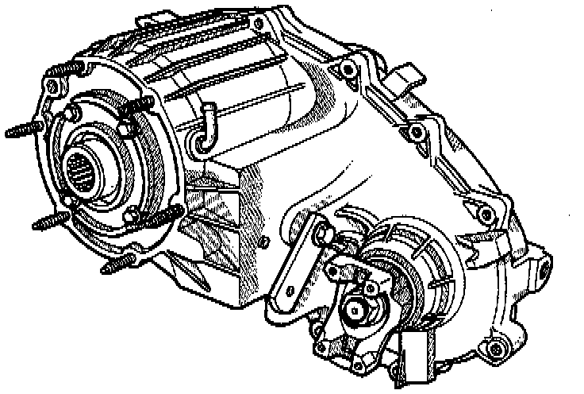
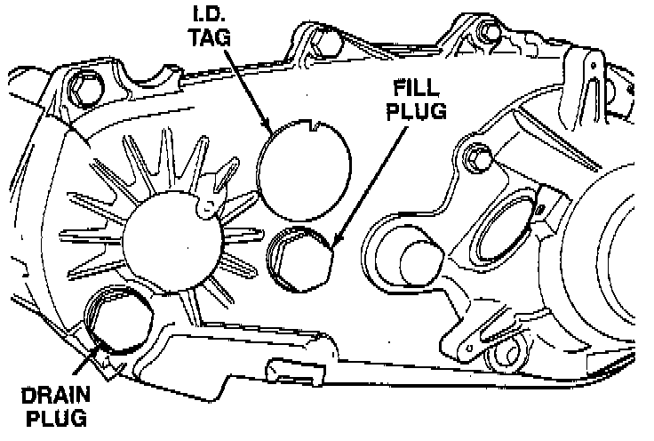

With NV249 Transfer Case

GENERAL INFORMATION
The NV249 is a full time 4-wheel drive transfer case with two operating ranges and a neutral position.
Operating ranges are 4-high and 4-low. The 4-low range is used for extra pulling power in off-road situations.
Engine torque is distributed to the front and rear axles through a viscous coupling. The NV249 low range is provided by a gear reduction system for increased low speed, off-road torque capability.
Transfer case operating ranges are selected with a floor mounted shift lever. The shift lever is connected to the transfer case range lever by an adjustable linkage rod. Range positions are marked on the shifter bezel plate.

TRANSFER CASE IDENTIFICATION
A circular I.D. tag is attached to the rear case of each NV249 transfer case. The tag provides the transfer case model number, assembly number, serial number and low range ratio.
The transfer case serial number also represents the date of build.
RECOMMENDED LUBRICANT AND FILL LEVEL
MOPAR Dexron II, or ATF Plus are the only lubricants recommended for the NV249 transfer case. Approximate fluid refill capacity is approximately 1.18 liters (2.50 pints).
The fill and drain plugs are both in the rear case. Correct fill level is to the bottom edge of the fill plug hole. Be sure that the vehicle is level to ensure an accurate fluid level check.